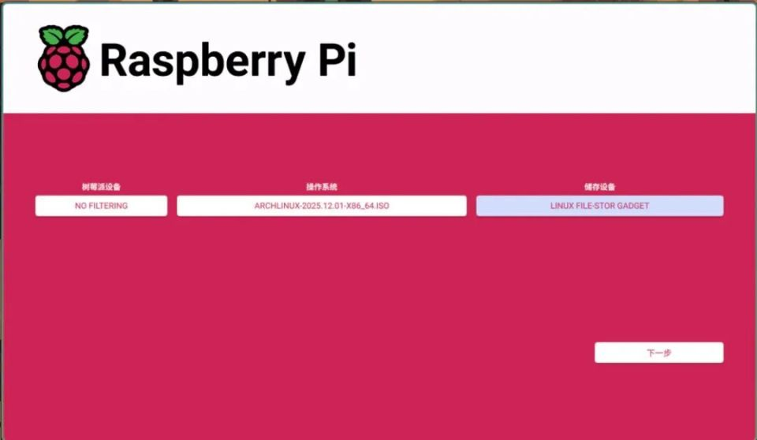
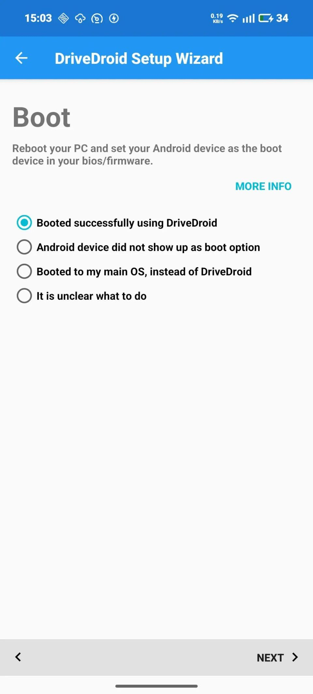

DriveDroid 藏得最深的 5 个冷门玩法，把手机当启动盘用透
大多数人装 DriveDroid 就是为了把 ISO 往手机里一塞然后重启进 BIOS——但它能做的远不止这些。我翻了两周设置项，挖出几个官方文档都没重点讲的隐藏技巧。
你以为 DriveDroid 就是个"把 ISO 挂到手机上当 U 盘"的工具？它的官网只说插上数据线、选镜像、重启进 BIOS，三步走完事——这大概是 90% 的人对它的全部认知。
但如果你真把它翻个底朝天，会发现这玩意儿藏得真深。从 USB Gadget 的内核级切换到空白 img 的万能介质用法，从 CD-ROM 模式的冷门优势到 SELinux 的绕过技巧，每一层都有"官方不宣传但折腾党必知"的东西。
我花了两周把菜单里每个设置项都点了一遍，向导走了三轮回，Root 管理器里授权删了又加——以下是我挖出来的 5 个真正能用上的隐藏功能。
一、空白 img + Rufus：绕开所有 ISO 格式问题的万能解法
这是我最喜欢的一个技巧。大多数人遇到"ISO 挂了但引导不起来"时第一反应是 ISO 坏了，但真相往往是你的 ISO 不是 Hybrid 格式，手机又不支持 CD-ROM 模式。
DriveDroid 里藏着一个菜单——主界面右上角三个点里找「创建空白镜像」，可以自定义大小（装个 Linux 发行版 8GB 就够）。创建完之后，把它以可读写 U 盘模式挂到电脑上，然后打开 Rufus，把你的 ISO 往这个"U盘"里写。
手机端：DriveDroid → 创建空白 img → Writable USB 模式挂载
电脑端：Rufus → 选这个 img → 写 ISO → 完成
手机端：切换回只读 U 盘模式 → 重启电脑引导Rufus 会自动格式化 FAT32/NTFS、拷贝 ISO 内容、装 GRUB 或 EFI 引导程序。不管你的 ISO 是不是 Hybrid、手机有没有 CD-ROM 模式，这一套通吃。我之前折腾一个老旧的 Linux 发行版，ISO 死活挂不上，用这招一次搞定。

二、USB System 三种模式：向导不说但必须懂的切换逻辑
第一次跑向导时它让你选 USB System，三个选项默认选第一个，大多数人也就点了下一步。但如果引导失败回到 Windows，你得回到这里挨个试。
这三个选项本质上是内核 USB Gadget 子系统的不同配置：
- Mass Storage：最常见，模拟成 U 盘。大多数 ISO 的首选。
- File-backed CD-ROM：模拟成光驱。好处是无论 ISO 是不是 Hybrid 都能引导，但不是所有手机都支持。
- Legacy：兼容旧内核的回退选项。新手机一般用不上，但老机型引导死活出不来时值得一试。
向导引导测试失败后，关电脑、断数据线、重新打开 DriveDroid、换一个 USB System 选项——后来翻了Drivedroid文档才知道这是官方提了但没强调的排查顺序。我同事那台小米 8，前两个选项引导黑屏，换 Legacy 一次成功。
三、CD-ROM 模式的隐藏优势：只读天然防污染
当你的手机支持 CD-ROM 模式时，把 ISO 以光驱形式挂载有个大多数人没意识到的好处：只读。
U 盘模式下，任何电脑都能往你的镜像里写东西——包括引导程序写入临时文件、或者更糟的，恶意软件。但 CD-ROM 模式下，电脑端完全无法修改镜像内容。这在一些公用电脑、公司设备上尤其有用：不用担心你的手机里的 ISO 被悄悄改写。
代价也有：不是所有 ISO 都支持 CD-ROM 引导，而且电脑会把它识别成光驱而不是 U 盘，某些启动菜单（比如 Windows PE）可能会找不到。所以这不是银弹，但在特定场景下是个很实用的隐藏选项。
四、Root 授权的正确打开方式：别让 SELinux 挡了道
装好从官方下载拿的 DriveDroid 后，第一次打开它会弹 Root 请求，大多数人点"允许"就完事了。但如果后面发现"挂载镜像后 0.1 秒自动弹出"或者"创建空白 img 失败"，问题往往出在你没管 Root 管理器的细节。
两个容易踩的坑：
坑一：Magisk 的 SELinux 策略拦截。Android 10+ 的 SELinux 可能拦截 su 执行某些内核操作。解决方法是去 Magisk 设置里开启「Superuser → 通知」，看 DriveDroid 请求 Root 时有没有被拦截记录。如果有，开「MagiskHide」或者直接换成 KernelSU——基于内核的 Root 方案对 SELinux 的绕过更彻底。
坑二：SuperSU 过时。这玩意儿早就停更了，新版 Android 上兼容性一塌糊涂。如果你还在用 SuperSU，建议直接换 KernelSU。我之前有个朋友就是因为 SuperSU 导致 DriveDroid 各种权限异常，刷成 KernelSU 后所有问题自动消失。
清理授权的正确姿势：从 Root 管理器里删掉 DriveDroid 的授权记录 → 强制停止 DriveDroid → 重新打开 → 这次弹窗时再点允许。别直接在 DriveDroid 里反复重试——没用，得从管理器那边清干净。
五、引导测试向导：别跳过这个 30 秒的关键步骤
向导最后一步会让你重启电脑进 BIOS 实际引导一次，很多人嫌麻烦直接跳过或者随便选了一个选项就完事了。
但这个步骤其实是在帮你验证整条链路：手机的 USB Gadget 模式有没有真的切过去、BIOS 能不能识别到、ISO 能不能引导。如果跳过了，到你真正需要用的时候才发现引导不起来，那就尴尬了。

成功的标志很明确：手机屏幕上 DriveDroid 显示 "Hosting image"，电脑启动后出现 ISO 的引导界面——Linux 发行版的安装菜单、Windows PE 的蓝色界面、或者你预期的那个东西。如果直接回原系统、黑屏重启、或者报 "No bootable device"，那就是链路有问题，回到第二个技巧里说的换 USB System 选项。
最后说一个坑
DriveDroid 把空白 img 以可读写模式挂到电脑上后，一定要记得用完切回只读。我有一次忘了切，直接拔出数据线，结果那个 img 被 Windows 写了一堆垃圾缓存文件进去，下次挂载时报文件系统损坏。用 Rufus 重写一次才救回来。
把手机当启动盘这件事，说简单也简单——选镜像、重启、引导，三步走。但说复杂也复杂，内核级的 USB Gadget 切换、ISO 格式的兼容性、SELinux 的策略拦截、Root 管理器的授权细节——每一层都有坑。
DriveDroid 的官网只讲了最基础的用法，上面这五个技巧是我翻了两周设置项、跑了三轮回向导才挖出来的。把它用透，你的手机就是随身的 Linux 安装盘、PE 救援盘、甚至是个比 U 盘还灵活的介质。
这套整理的用法和镜像模板我同步维护在几个代码仓库里——GitHub 主站、Gitee 和 GitCode 方便国内朋友访问，想直接拿文件的可以过去。